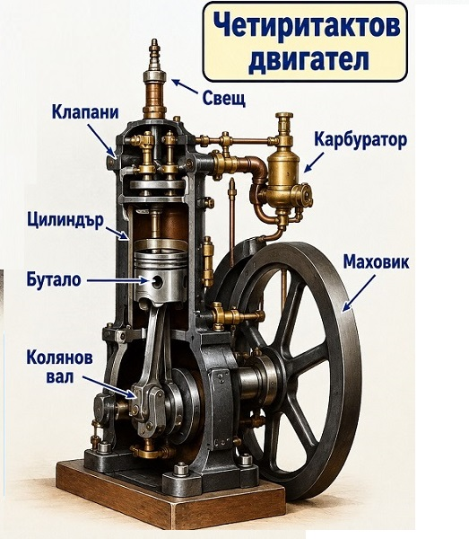

Двигател с вътрешно горене
Един цикъл е два оборота на коляновия вал, или 720°. Разрезът показва какво правят буталото, клапаните и свещта във всеки такт.

| Такт | Ъгъл | Бутало | Смукателен клапан | Изпускателен клапан | Свещ |
|---|---|---|---|---|---|
| Всмукване | 0°–180° | надолу | отворен | затворен | няма искра |
| Сгъстяване | 180°–360° | нагоре | затворен | затворен | няма искра |
| Работен ход | 360°–540° | надолу | затворен | затворен | искра при горната мъртва точка |
| Изпускане | 540°–720° | нагоре | затворен | отворен | няма искра |
Малко история. Николаус Ото (1832–1891) построява първия работещ четиритактов двигател с вътрешно горене през 1876 г. Идеята за четирите такта е описана по-рано, през 1862 г., от французина Алфонс Бо дьо Рош. Затова този цикъл се нарича още цикъл на Ото, а бензиновите двигатели в колите работят по същия принцип и днес. В анимацията ходът на буталото, клапаните и цветът на газовете са опростени, за да се виждат ясно.